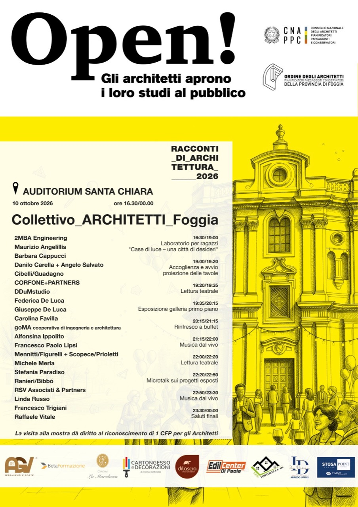

Open! 2026 / incontrare la città
Il 10 ottobre lo Studio Cibelli/Guadagno partecipa a Racconti di Architettura 2026, all’Auditorium Santa Chiara di Foggia: progetti, incontri e cultura aperti alla città.

Sabato 10 ottobre 2026 saremo all’Auditorium Santa Chiara di Foggia con il Collettivo_ARCHITETTI_Foggia per la mostra “Racconti di Architettura 2026”, promossa dall’Ordine degli Architetti della Provincia di Foggia.
L’appuntamento fa parte di Open! Studi Aperti, la manifestazione nazionale che avvicina il pubblico al lavoro degli architetti. Per il nostro studio è un’occasione per raccontare i progetti, condividere le scelte che li accompagnano e confrontarci con cittadini e colleghi sul rapporto tra spazi e persone.
Il programma si svolgerà dalle 16.30 a mezzanotte: laboratorio per ragazzi “Case di luce – una città di desideri”, esposizione e proiezione delle tavole, letture teatrali, buffet e musica dal vivo. Alle 22.20 i microtalk offriranno un approfondimento sui progetti esposti.
Vi aspettiamo a Santa Chiara per conoscere il nostro studio, guardare i progetti da vicino e parlare insieme di architettura.
Date e programma dell’appuntamento di Foggia sono tratti dalla locandina allegata.